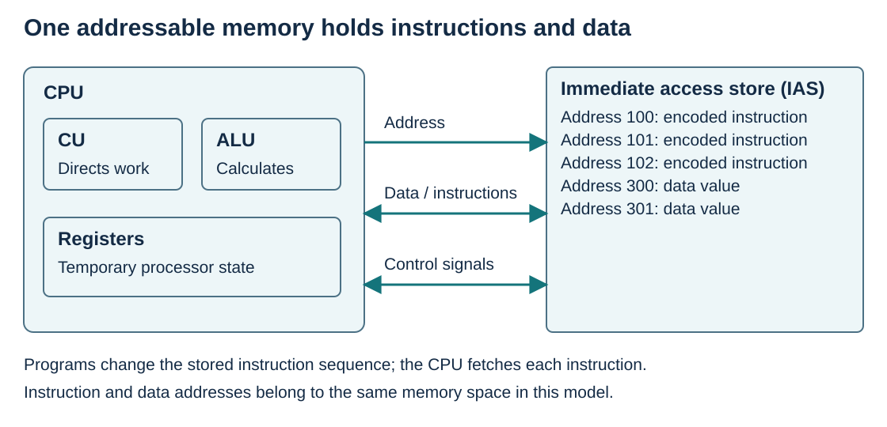

Von Neumann architecture and the stored program concept
Visual overview
Processor and shared memory

Visual transcript
- The CPU contains the CU, ALU and registers.
- The IAS holds both instructions and data.
- The address bus identifies a location; the data bus transfers values in either direction.
- Control lines carry read/write and other coordinating signals.
Core explanation
A stored program computer holds its instructions in memory. The processor fetches these instructions, decodes them and carries out the specified operations. Loading another instruction sequence changes the task the computer performs.
The basic Von Neumann model uses one memory for instructions and data. The processor contains a control unit, an arithmetic and logic unit and registers. Buses connect the processor to memory and input/output interfaces; instructions and data share transfer paths.
Worked example · A program and its data in one store
- Stored items
Location 100 holds LDD 300; location 101 holds ADD 301; locations 300 and 301 contain 12 and 7.
- Execution
The processor fetches the instructions at 100 and 101 and reads their operands from 300 and 301. ACC becomes 19.
- Changing the task
Replacing ADD 301 with SUB 301 changes the calculation to 12−7 without changing the processor hardware.